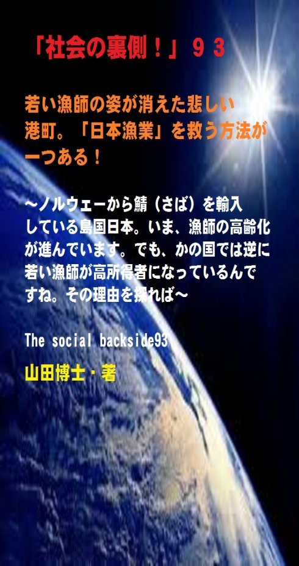

| 「社会の裏側！」９３......若い漁師の姿が消えた悲しい港町。「日本漁業」を救う方法が一つある！: ノルウェーから鯖（さば）を輸入している島国日本。いま、漁師の高齢化が進んでいます。でも、かの国では逆に若い漁師が高所得者になっているんですね。その理由を探れば | |
| 山田博士 | |
| kominitesyuppankai (2018) | |

■「社会の裏側！」９３
若い漁師の姿が消えた悲しい港町。「日本漁業」を救う方法が一つある！
～ノルウェーから鯖（さば）を輸入している島国日本。いま、漁師の高齢化が進んでいます。でも、かの国では逆に若い漁師が高所得者になっているんですね。その理由を探れば～
The social backside93
山田博士・著
★本書の著作権について
皆さんにはまったく関係ないことだと思いますが、複写、転送、抜粋、転載など、著作権侵害にあたる行為は絶対になさらないで下さい。本書の著作権は、山田博士にあります。今後、皆さんのお役に立ちたい活動が出来なくなりますので、その点、ぜひよろしくお願いします。ささささ、それでは、本書をどうぞ、ごゆっくりご覧下さい。
★概要
ぼくの故郷（ふるさと）は、近畿地方の日本海に面した港町。
いつもこの町に戻ると、ぼくはキャスター付きの大きなカバンをゴロゴロと引っ張りながら、駅から続く大通りを実家へと歩きます。
その大通りの途中の交差点を右に曲がったところに、「魚屋専門通り」があります。
でもいつも、その光景を見ると、本当にショックなんですね。
ぼくは、かつて賑わったその商店街の光景をよく知っています。
でもいまの魚屋の多くはシャッターを閉め、ホンの数軒のみしか開いておりません。
なんとも寂しい光景。
じつは、ぼくの中学時代の友だちが、その貴重な１軒の店主をしているのですが、最近は、いままで笑顔を返してくれていた彼の憂える顔を見るのが、本当に辛（つら）くなりました。
★★★
もちろん、日本各地の商店街が、これと同じようなシャッター通りと化してはいます。
でも、港町にあるこの「魚屋専門通り」でさえ、いまではこんな有り様（さま）なんですね。
いったい、周囲を海に囲まれた島国である日本の水産業は、どうなっているのか。
そして、今後、日本の水産業は、どうなって行くのか。
若い漁師さんたちがどんどんいなくなり、日本の農業と同じような環境が広がっている港町。
いま、ぼくたちは、どうすればいいのか。
そして、日本の漁師たちがでっかい夢を持つ方法とは。
★★★
結論を先に、急いで、述べておきます。
その方法は......あります。
しっかりと......あります。
だから、読者の皆さんも、大いに安心して下さい(笑)。
......と言っても、皆さんがいっしょになって、応援し、先に立って動いて下さらなければ、ダメなんですがね。
すべては、皆さんの両肩（りょうけん）にかかっております。
さて、日本の漁師たちが、でっかい夢を持つ方法。
それは、外国と比べてみれば、本当によく分かります。
今回の問題は、ほかの産業や今回の「築地移転問題」などとも大いに関連しています。
そのため、ぼくたちはいまこそ、そのような視点で日本を見つめ直してみる必要があるのじゃないかなと、思っています。
★★★
日本の漁業では、平均年齢がとっくに６０歳を超えています。
でも、それは同時に、漁業が、若者たちにとっては魅力のない産業になってしまったという意味でもあるわけなんですね。
漁業に従事している人の数は、ピーク時には１００万人にも達していたと言われていますが、現在は、なんと２０万人を割っているほど......。
その衰退のスピードには、凄（すさ）まじいものがあります。
地方にある漁村は、いまではなんと「限界集落（げんかいしゅうらく）」化......しているほどなんですね。
ちなみに、この「限界集落」とは、過疎化などによって、人口の５０%以上が６５歳以上の高齢者になって、冠婚葬祭など社会的共同生活の維持が非常に困難になった集落......を言います。
各地にある漁村が、いま、そうなっている......。
★★★
驚くべきことではありませんか。
日本人は魚を獲（と）り、魚を食べ、魚文化とともに歴史を歩いてきたわけです。
こうした水産業は、ただ単に食べものの一つだというだけじゃなく、日本の文化の基礎構造なんですね。
こうした水産業が無くなれば、日本、いや日本人そのものも存在しない。
そのような大切な分野なのですが、いまや、若者たちにとって魅力のない産業になっているわけですね。
本書では、そうした事態を解決するために、大切な方法を述べます。
しかも、これは外国ではもう当然のようになっており、これこそが、若者たちが喜んで漁業に従事することにつながります。
簡単なこと。
だから、日本だけが不可能なことでは、まったくないんですね。
ぜひ、多くのかたが、気持ちだけでもこうした漁民たちを応援なさって下さい。
そうして、みんなで、日本をかつてのような水産王国に戻そうじゃありませんか。
ぼくは、日本の漁師さんたちが獲った、日本の周囲で獲れた魚を食べたい。
そして、魚たちとともに人生を歩いて行きたい。
......いつも食いしん坊のぼくは、強くそう思っております。
ささささ、本書をどうぞ、ご覧下さい。
★目次
★（第１章）
港町にあるこの「魚屋専門通り」でさえ、いまではこんな有り様（さま）です。いったい、日本の水産業はどうなっているのか。そして、いったい、日本の水産業はどうなって行くのか......
★（第２章）
漁業では、平均年齢がとっくに６０歳を超えているのですが、それは同時に、漁業が、若者たちにとっては魅力のない産業になってしまったという意味でもあるわけなんですね。ちょっと考えてみてください。自分がもし漁師だったとしましょう......
★（第３章）
日本の漁業は、「補助金」漬けです。なんと、ＯＥＣＤの中では、日本の漁業に対する「補助金」の額は、世界一なんですね。これだけ「補助金」を捻出しているのに、どうして、日本の漁業は衰退の一途なんです？ え？ なぜなんです？
★（第４章）
日本の漁獲枠は、「全体の総漁獲量」を決めているだけなんですね。だから、誰が漁獲枠を使うかは自由で、早い者勝ちなんです。これじゃ、乱獲が始まります。こんな方法は、先進国と言われる国の中では、日本ぐらいでしょう......
★（第５章）
いまのノルウェーにみたいに、各漁業者に、魚が配分されていれば、他人と競争する必要もありません。相場が高くなりそうなときに、「さてっと、そろそろ魚の相場が上がりそうだから漁にでも出るかなあ......」と、のんびり漁に出ればいいわけですから(笑)......
★「社会の裏側！」シリーズの既刊本案内
★プロフィール
（最初に、恥ずかしながら、ぼくの紹介を簡単に述べておきます）
やまだ・ひろし。
１９４７年、福井県小浜（おばま）市生まれ。
食生態学者。元大学名誉教授。日本危機管理学会会員。
山田博士いのち研究所主宰。
ベトナム戦争の終わったちょうどその年１９７５年に、マンガストーリィと商品の実名で食べものや環境を取り上げた小冊子「暮しの赤信号」を発行する。実名で取り上げたため、社会に衝撃を与えた。各号１０万部単位で読まれ、隠れたベストセラーなどと、新聞などで何度も報道される。
同じ年、偶然にも有吉佐和子さんの「複合汚染」が発表され、この小冊子はその動きも受けて多くの学校の副読本としても活用された。
文化放送の「なっちゃこワイド」や、ＮＨＫ海外放送「ある日本人」でお話しをしたり、ギター弾き語り公演や、各自治体や学校などへの講演なども続けている。
現在は、メルマガ「暮しの赤信号」（「短縮版」と「完全版」の２種）を発行し、企業名や商品名なども公表して、世界中のかたに喜ばれている。
その読者層は、医師や看護師、栄養士、教師、会社経営者、自治体など、国の内外を問わず、多くの読者たちから毎日のように便りが届いている。年齢層も、１０代からかなりの高齢のかたまで、さまざまだ。
このメルマガは、まぐまぐ！を始め３つのスタンドの合計で、７千部発行しているが、もしご関心のあるかたは、ご覧いただくと嬉しい。毎日、早朝５時に届けられる（日曜は除く）。その時刻を楽しみにされている読者も多いとか。
先述したように、メルマガ「暮しの赤信号」には２種類あり、「短縮版」のほうは無料。「完全版」のほうは、山田の思いが１００％掲載されており、社会を見るのに、毎回大いに参考になるだろう。そのほかにもさまざまな特典がある。「短縮版」については、次のアドレスで登録できる（「完全版」は、「短縮版」の中に案内あり）。
■「短縮版」登録（無料）→ http://goo.gl/AFx95J
また、毎月第３土曜日に、東京の恵比寿でお茶飲み会「博々亭（ひろびろてい）」を開催。遠路から毎回読者が駆けつけている。参加条件はメルマガ読者に限定。参加費用は無料だ（８月と１２月はお休み）。
著書に 『脱コンビニ食！』（平凡社新書）
『危険な食品』（宝島社新書）
『その食品はホンモノですか？』（三才ブックス）
『ひとり月１万円食費で幸せ生活』（ＷＡＶＥ出版）
『最新 危ないコンビニ食』（現代書館）
『あぶないコンビニ食』（三一新書）
『続 あぶないコンビニ食』（同）
『外食店健康度ランキング』（同）
『山田博士の暮しの赤信号』第１巻～第５巻（亜紀書房）
『暮しの赤信号』小冊子＆ＣＤ－ＲＯＭ版全２３巻
『月１万少々の食費で、ザクザクと健康を稼ぐぼくの
方法』
『いのち運転"即実践"マニュアル』各話
『社会の裏側！』各巻
（これは、アマゾン発行の電子書籍。ＰＤＦ版でも読
める）
『セーラー服と警察犬』（小説）各巻
『実話・食卓の事件簿』各巻......などがある。
山田のホームページ http://yamadainochi.com/
★はじめに......
こんにちは。
山田博士（やまだ・ひろし）です。
本書をご覧いただき、嬉しく思っております。
この内容をご覧いただくことで、少しでもあなたが「社会の裏側！」の流れにお気づきになり、そしてたとえ１ミリでもいい、即、行動されることを願っております。
ただ読むだけでは、誰でもできます。
それでは、あなたの身の回りの状況は石のように動きません。
本書をご覧になって、これは......と思うことがあれば、即行動なさって下さい。
お願いします。
その小さな行動の積み重ねこそが、あなたの明日を、１２色のバラ色で輝かせることになると信じております。
なお、この「社会の裏側！」は、今後もシリーズとして発刊して行くつもりです。
もしご関心があれば、「社会の裏側！」という名前で、アマゾンで検索してお調べ下さい。
さまざまな問題の社会の裏側！を詳しく、しかも楽しく述べております。
ぼくの名前で検索されても、見つかるのではないかと思います。
もし、「ＰＤＦ版」でご希望の場合は、ぼくの事務局まで遠慮なくお問い合わせ下さい。事務局→ http://goo.gl/t12Yx
ささささ、能書きはそこまでにします。
どうぞ、笑顔で、頁をお繰（く）り下さい。
お楽しみに！
★（第１章）
港町にあるこの「魚屋専門通り」でさえ、いまではこんな有り様（さま）です。いったい、日本の水産業はどうなっているのか。そして、いったい、日本の水産業はどうなって行くのか......
ぼくの故郷（ふるさと）は、近畿地方の日本海（若狭湾）に面した港町です。
湾の奥まったところにあるため、いつも海は穏（おだ）やかで、波も静か。
夕方など、湾の先にある細い岬の上に、名残惜しそうにゆっくりと沈んで行く夕陽の美しさを眺めていると、もう別世界です。
まばゆい赤色からだんだんとピンク色へ、そして薄紫色から濃い紫色へと次第に暗くなって行く光景は、ぼくのような者でさえ、思わず、ホ～ッと、ため息が出てしまいます。
その小浜（おばま）駅から続く駅前通りを歩きますと、ある小さな交差点を右に曲がったところに、アーケードになった魚屋専門の商店街があるんですね。
お盆や正月に町に戻ったときなど、ぼくはいつも、その駅を降りて荷物を持ちながら（キャスターをガタガタと押しながら）、その場所を通るのですが、その交差点を曲がったすぐ２軒目のところに、中学時代の友人が経営している魚屋があります。
その店のすぐ右手で、いつも彼は魚の仕込みなどをしているため、その前を通るたび、「おっすっ！」なんて大きな声で呼びかけるのですが、そのたび、彼は驚いた顔をして笑顔を返してくれるわけですね。
でも、彼の心の中では、漁業についての未来の心配があるんだろうなと、ぼくはいつも、勝手にそう思っています。
だって、いつも憂えているような顔をしていますからね。
とくに最近数年は、そのようです。
この商店街を見てみてください。
かつては、ズラッと魚屋さんが並んでいました。
でもいまは、ホンの数軒のみ。
あとはみな、錆（さ）びたシャッターが降り、商店街そのものが薄暗くなっているほどの静けさなんですね。
もちろん、日本各地の商店街が、これと同じようなシャッター通りと化してはいるのですが、港町にあるこの「魚屋専門通り」でさえ、いまではこんな有り様（さま）。
いったい、日本の水産業はどうなっているのか。
そして、いったい、日本の水産業はどうなって行くのか。
ぼくだけじゃなく、多くのかたはそう思っていらっしゃるのではないでしょうか。
海に四方を囲まれたニッポン。
魚とともに生きてきたニッポン。
その島国のニッポンで、魚が獲（と）れなくなり、漁民がいなくなり、魚屋が消えている。
いったい、何がいまの日本には欠けているのでしょうか。
そして、かつてのような、あの賑（にぎ）やかな威勢のいい掛け声が、再び戻って来る日が、はたしてあるのでしょうか。
いま、ぼくたちは、どうすればいいのか。
そして、日本の漁師たちがでっかい夢を持つ方法とは。
結論を先に述べておきます。
その方法は......あります。
しっかりと......あります。
だから、読者の皆さんも、大いに安心してください(笑)。
......と言っても、皆さんがいっしょになって、応援し、先に立って動いて下さらなければ、ダメですがね。
すべては、皆さんの両肩（りょうけん）にかかっております。
さて、日本の漁師たちが、でっかい夢を持つ方法。
それは、外国と比べてみれば、本当によく分かります。
なぜ日本はこうした「事態」に陥（おちい）ったのか。
日本だけが「特異な構造」だったわけですね。
今回の問題は、ほかの産業や今回の「築地移転問題」などとも大いに関連しているため、ぼくたちはいまこそ、そのような視点で日本をよく見つめ直してみる必要があるのじゃないかなと、思っています。
さて、それでは、いまの日本の漁業（水産業）の現況を、ちょっとのぞいてみようじゃありませんか。
つまり......。
★（第２章）
漁業では、平均年齢がとっくに６０歳を超えているのですが、それは同時に、漁業が、若者たちにとっては魅力のない産業になってしまったという意味でもあるわけなんですね。ちょっと考えてみてください。自分がもし漁師だったとしましょう......
四方を海に囲まれた日本。
昔からこの国では、漁業（水産業）が非常に盛んでした。
ところが、このところ、日本の水産業、そして漁業は、衰退の一途（いっと）をたどっております。
日本で漁業に従事している人の数は、ピーク時には１００万人にも達していたと言われていますが、現在は、なんと２０万人を割っているほど......。
その衰退度には、凄（すさ）まじいものがあります。
地方にある漁村は、いまではなんと「限界集落（げんかいしゅうらく）」化......しているほどなんですね。
ちなみに、この「限界集落」とは、過疎化などによって、人口の５０%以上が６５歳以上の高齢者になって、冠婚葬祭など社会的共同生活の維持が非常に困難になった集落......を言います。
各地にある漁村が、いま、そうなっている......。
信じられますか。
あれほど、豊漁（ほうりょう）や威勢のいい声で賑（にぎ）わっていた漁村が、いま......。
しかも、漁業に従事する漁師たちは、みな高齢化しております。
平均年齢はとっくに６０歳を超えているのですが、それは同時に、漁業が、若者たちにとっては魅力のない産業になってしまったという意味でもあるわけなんですね。
ちょっと考えてみてください。
自分がもし漁師だったとしましょう。
大事なわが息子に、その跡（あと）を継がせたいと思ったにしても、その収入がどんどん減少している現象を知りながら、喜んで継がせますか。
さあ、親として、いかがです？
これは、どこの国の親でも同じ考えでしょう。
収入が不安定なのに、喜んで跡を継がせる親は、世界に一人もいません。
少しでもわが子の幸せを願うのが......親というものでしょう。
いまや、日本の漁業従事者の平均所得は、およそ２００万円程度。こんな収入で、これから家庭を持つ若者が夢を持てますか。
結婚できますか。
やはり、十分な収入が保証されていなければ、若い人は誰も漁業に従事しようとは思わないはずです。
いや、それが、当然です。
ところが、日本の漁業は、縮小どころか、はっきりと衰退し始めているわけですね。
先述したように、漁村は......「●●集落」となってしまいました（●●は下記の設問を）。
じつは、このような高齢化は、もう数十年も前から始まっていたのです。
将来のこの光景が、予想されていたわけですね。
でも、行政は、ほったらかしでした。
この国の役人や議員たちは、誰一人、漁業や林業や農業を、必死になって守り抜こうと思っていないんじゃないか。
ぼくは、改めて、そう思っております。
自分の懐（ふところ）の中身しか、考えていない。
まあ、そのことは、現在、日本の各地で「政務活動費」の不正がどんどん湧き出ていることからも、よく分かるというものですが......(笑)。
税金を、自分の財布のように思っている......。
業者からもらう白紙の領収書を、まるで小切手のように思っている。
いまの日本では、長い目でモノを見る人が、悲しいかな、非常に少なくなりました。
自分のことしか考えていないという、そう、まるで、どこかの発展途上国や独裁国家のような姿になってしまったのですね。
歪（ゆが）んだ個人主義だけを進めてきた、戦後の「教育」が間違っていたのかもしれません。
漁業。
いったい、外国ではどうなっているのか。
下記でちょっと述べてみましょう。
もう、驚かれると思いますよ、日本とのあまりもの違いに......。
★（第３章）
日本の漁業は、「補助金」漬けです。なんと、ＯＥＣＤの中では、日本の漁業に対する「補助金」の額は、世界一なんですね。これだけ「補助金」を捻出しているのに、どうして、日本の漁業は衰退の一途なんです？ え？ なぜなんです？
ぼくたちの身の回りにあるすべてを、いままでの「日本だけの尺度」だけで測ると、失敗します。
もちろん、昔から連綿（れんめん）と続いてきた優れた「尺度」もあるのですが、いまのような資本主義社会の中では、いつの間にか、それらがすべて「資本の論理」だけの尺度になっている場合が多いわけですね。
そしてそうなると、「自分で」稼がなくてはならない。
税金で誰も助けてはくれませんからね。
そのため、「これが正しいのかどうか」と、考える前に、周囲のみんなが実践しているからいいだろうと、「赤信号、みんなで渡れば怖くない」的な発想で、商売をしてしまう。
そして気づいたら、全員が間違った迷路に入り込んでしまい、全員が動けなくなっていた......。
それと同様のことが、いまの漁業で、起こっているように思えます。
まず、ぼくたちの常識を覆（くつがえ）すことから始めましょう(笑)。
たとえば、日本のような「先進国工業国」では、農業や林業、漁業などの第一次産業は、衰退するのが当たり前。
そう思っていらっしゃるのではありませんか。
違いますか。
ぼくなども、子どものころ、小さな島国の日本は資源もないのだから、外国から原材料を輸入し、日本でそれを加工して輸出をする。そのような「加工貿易」こそ、日本がこれから生き延びて行くための唯一の手段なのだと、教わりました。
だから、第一次産業は、衰退しても仕方がないのだと......。
工業だけが発展すればいいのだと......。
そうした思いがみんなにあるため、日本ではこうした第一次産業には、ぼくたちが払う税金から巨額の「補助金」を出して"助ける必要がある"んだと、信じていたわけです。
でも、事実は、まったくそうではないんですね。
たとえば、この漁業についてみますと、アメリカやノルウェー、オーストラリアなどの先進国では、補助金がほとんど出ていません。
驚かれたでしょう？
なのに、彼らの国では、漁業が発展している。
しかも、持続的に......。
なぜ？
翻（ひるがえ）って日本の漁業は、「補助金」漬けです。
なんと、ＯＥＣＤ（経済協力開発機構。先進国主体）の中では、日本が出している漁業に対する「補助金」の額は、世界一なんですね。
第２位のアメリカや第３位のＥＵ全体を、遠く引き離しております(マラソンではありません。喜ぶところではない。笑)。
これだけ「補助金」を捻出しているのに、どうして、日本の漁業は衰退の一途なんです？
え？
なぜなんですか？
ほかの先進国では、ほとんど「補助金」など出されていないのに、漁業は成長し、若者たちが裕福に暮らしている。
何かが間違っていると思うのは、ぼくだけじゃないでしょう。
今回の「築地移転問題」。
ちょうどいい機会じゃありませんか。
こうした「魚」に関する諸問題を、この際、一挙に解決に結びつけたいものだと、ぼくは思っています。
税金が本当に無駄に使われていることを、もっともっと多くの人たちに知ってほしい。
そして、声を挙げるべきです。
今回のこの作品が、その一つの役目になれば、幸いです。
ちょっと話が逸（そ）れましたが、なぜ、こうした「補助金」だけでは解決しないのか。
それは、根本的な問題がおざなりにされているからなんですね。
つまり......。
★（第４章）
日本の漁獲枠は、「全体の総漁獲量」を決めているだけなんですね。だから、誰が漁獲枠を使うかは自由で、早い者勝ちなんです。これじゃ、乱獲が始まります。こんな方法は、先進国と言われる国の中では、日本ぐらいでしょう......
日本では、「漁獲規制」が、しっかりとなされていない。
これこそが、いまの漁業の一番の問題でしょう。
ちょっと考えてみましょう。
子どもでも分かることです（おっととと、子どもさん、ごめん！）。
野菜でもそうですが、種を蒔（ま）いてしばらくすれば、成長し大きくなります。
でも、芽が出てすぐに収穫すれば、どうですか。
収穫も少なく、次の種もできません。
そうですよね。
魚や貝たちも同じ。
生物資源というものは、みなそうなんですね。
それなのに、日本の漁業では漁獲規制をしていないため、いわば魚の獲（と）りたい放題なんです。
いわば、早いもの勝ち。
だから、大きな網で、しかもその目を小さくし、稚魚（ちぎょ）まですべて獲ってしまっているわけですね。
規制がなくて早いもの勝ちなのですから......。
みんな、そうします。
でも、そんなことをしてすべての魚を獲り尽くせば、子どもも生まれず、長い目で見てみんなが困ってしまうことは、火を見るよりも明らかじゃありませんか。
漁業については、目の前でたくさん獲ることよりも、「あとにしっかりと残す」......ことのほうが大事なんです。
そのほうが、漁師にとっても、長い目で見れば大きな収入になります。
魚や貝などの生物資源は、十分な親魚さえ残しておけば、半永久的に利用できますからね。
ぼくの故郷では、「焼き鯖（さば）」が人気です。
先述した友人の店では、いまでも店頭に、焼き鯖が数匹、いつも並べられています。
１本、８００円ぐらいかなあ......(笑)。
脂（あぶら）が乗っていて、子どものころ食べた鯖は、本当に旨かった。
でも、いまは、日本で売られている鯖の多くは、ノルウェーから輸入されているんですね。海に囲まれた日本が、魚を輸入している......。
この鯖について、ある調査を見てみますと、１９８０年ごろからの乱獲のため、日本の周囲にいる鯖の大部分が獲り尽くされたことが分かります。
これは、よく言われるように、中国や韓国の漁船が乱獲したからというわけじゃないんですね（まあ、ほかのところでは分かりませんが）。
この調査は、彼ら外国の船が入ることのできない日本の排他的経済水域（EEZ）で鯖の産卵場も回遊ルートも完結していますので、それを見ますと、こうした乱獲が、日本漁船によってなされたことが分かります。
その結果が、いまの日本の漁業の衰退なんですね。
日本の漁具メーカーもいっしょになって、いかに稚魚を多く獲るかを「研究」し、大きくて目の小さな網を開発したりしました。
そのため、１９９０年代からは、「未成魚」が中心になってしまいました。
まったく恥ずかしい事態となったわけですね。
いわば、漁民たちが自分で播（ま）いた種（たね）......というわけ。
ヨーロッパなどでは、当然ですが、親魚が十分に残るように「漁獲規制」がなされております。
だから安定的に収穫できる。
そして、「自然に増加した分の魚だけ」収穫しているわけですね。
これだと、魚の枯渇（こかつ）が起こりようもありません。
それなのに、日本では「漁獲規制」もせず、獲りたい放題でした。そのため、この点にこそ、いまの漁業の解決策があるんだと思っています。
現在は、日本とヨーロッパなどでは、収穫する鯖の大きさが異なっております。
日本でも先述したように乱獲が始まる前は、いまのヨーロッパ諸国と同じような大きさの鯖を収穫していたのですが、いまは違うわけですね。
いまは、０歳や１歳の鯖しか獲れません。
いわゆる未成魚......。
鯖が卵を産むのは２歳ぐらいからですから、これでは鯖の子どもさえ生まれなくなります。
どうして、このような結果が分かっていながら、現在のような方法をいまも続けているのか。
どう考えても、不思議です。
じつは日本でも、１９９７年から、７魚種に限っては、漁獲枠を設けました（鯖も含んでいます）。
ところが、その枠が......(笑)。
もう笑ってしまうしきゃないのですが、「枠が大きい」......。
つまり、漁師たちが「一所懸命に獲っても」、とても獲り切れないような過剰な漁獲枠が設定されているわけですね。
これ、いったい何のための「漁業枠」なんです？(笑)
しかも、日本の漁獲枠は、「全体の総漁獲量」を決めているだけなんですね。
だから、誰が漁獲枠を使うかは自由で、早い者勝ちなんです。
これじゃ、乱獲が始まります。
こんな方法は、先進国と言われる国の中では、日本ぐらいでしょう。
ところが、各国は、「各漁業者」に配分している......。
漁獲枠を、各個人に配分しておきますと、早獲り競争は起こりません。そうですよね。
たとえば、ノルウェーの漁業者は、漁獲枠の上限が決められる代わりに、魚の相場を見ながら、大型の価値のある魚だけを狙って獲ることができます。
そのため、ノルウェーの鯖の品質は安定し、値段も安くならないわけですね。
ノルウェーの若い漁民たちは、だから裕福に暮らしているようですよ(笑)。
１年のほとんどは船を遊ばせておき、魚の相場を見て出漁するというわけ。
そして船が空いているときは、ほかの用途に使うこともあり、収入もいちだんと増えているとか。
日本がそのノルウェーの鯖を高く買ってくれるわけですから、もう日本様々（にほんさまさま）らしい......(笑)。
いったい、日本の行政は何をしているのか。
こうした現状を見れば、日本でも同様の、「各漁業者」に配分した「漁獲規制」をすればいいのじゃありませんか。
当初は、漁民たちの反対を浴びることでしょう。
でもそれは、ノルウェーも同じでした。
「漁獲規制」をスタートするときは、規制ということで、漁民たちの猛反対を受けたようですね。
でも、数年経ち、魚の価格も安定して、収入が上がっていくことが分かりますと、いまでは「猛賛成」だとか......(笑)。
★（第５章）
いまのノルウェーにみたいに、各漁業者に、魚が配分されていれば、他人と競争する必要もありません。相場が高くなりそうなときに、「さてっと、そろそろ魚の相場が上がりそうだから漁にでも出るかなあ......」と、のんびり漁に出ればいいわけですから(笑)......
いま述べましたように、日本でも、「各漁業者への漁獲規制」を、しっかり設ければ、すべてはうまく行くはずです。
いまのような、過去続いた「漁協の縄張り意識」など、きっぱり捨てるべき。
そして、なによりも漁師たちの収入アップをいつも考えながら、安定した暮らしができるよう、いっしょになって考えるべきです。
そして、水産行政にこうした方策を全力で働きかけ、日本の水産業を昔のように安定させるべきでしょうね。
なにしろ、日本は島国なのですから。
それに、いつも、燃油の値段が上がったからと言って、「デモ行進などをするヒマ」があれば、どうして燃油が上がったら困るのかを考えてほしい。
だって、いまのように「漁獲規制」がないため、漁師たちは船を全速力で海に出し、ほかの船と競争するために燃費がかかるわけです。違いますか。
でも、いまのノルウェーにみたいに、各漁業者に、魚が配分されていれば、他人と競争する必要もありません。
相場が高くなりそうなときに、「さてっと、そろそろ魚の相場が上がりそうだから漁にでも出るかなあ......」と、のんびり漁に出ればいい(笑)。
だから、船をフル回転で走らせることもなく、燃費も少なくて済みます。
そんなデモをするより、もっともっと根本的なことを解決する方向に全力で動いてほしいですね。
どんなことでも「根本的」なところを変えなければ、いつまで経っても解決しません。
いずれにしても、ぼくは、農産物と同じく、魚も「日本産」を食べたい！(笑)。
ノルウェーから鯖を輸入するなんて、そんな恥ずかしい行為を、いつまで続けるわけです？
上述したように、水産業を立て直す答えは、もうはっきりしているのですから、即、行動を起こしてほしい。
そして、消費者のぼくたちも、そうした行動を後ろから応援すべきでしょうね。
だって、こうした漁師さんたちに若い人がどんどん流れ込めば、将来が明るくなるじゃありませんか。
漁師さんたちの平均年齢が４０歳ぐらいになれば、本当に嬉しいけどなあ。
そして、そのような日本産の魚を口にしながら、眼を細めてみたい(笑)。
これは、今回のような漁業だけじゃなく、農業や林業も含め、こうした行政の「補助金」が利権の温床になっているのを、このあたりですべて透明にすべき始まりだと思っています。
先述しましたように、今度の「築地移転問題」も、そうした匂いがプンプン臭っていましたからね。
お、日本産の焼き鯖の匂いがどこからか漂ってきた......と思いましたが、どうやら、またまた台所で、日本産の妻が、なにやらを焦がしたようで......。
ハハハ......。それじゃまた次回ね。ご機嫌よう。（山田博士）
▼設問です▼
設問→ 上記の文章を読み、下記の●●にあてはまるものを、選択語句から選んでみよ。ただし２文字とは限らない。
「先述したように、漁村は......『●●集落』となってしまいました」
【選択語句→ 限界、孤立、平家】
■答え■
下記のとおりです。でも、先に答えを見てはいけません。
本文を再度ご覧になり、十分想像してから答えをご覧下さい。
きっとその繰り返しが、あなたの明日を輝かせることになると思っています。
答え→ 限界
（了）
★（最後にひとこと）
ここまでお読みになって下さり、ありがとうございました。
ここで述べているような内容の最新情報を、メルマガ「暮しの赤信号」では述べております。
企業名や商品名も公表していますので、もしご関心のあるかたは、下記から登録されれば、毎回、自動的にお送りします。
「短縮版」は無料です。
毎回、早朝５時に、あなたのところへ配信します。
現在、全世界で数千部を配信しておりますが、楽しい文体が人気のようですよ。早朝５時をお待ちになっているかたも......。
その日から役立つ内容です。
「短縮版」（無料です）→ http://goo.gl/AFx95J
メルマガ上で、また、お逢いしましょう！
＝＝＝＝＝＝＝＝＝＝＝＝＝＝＝＝＝＝＝＝＝＝＝＝＝＝＝＝＝＝
★「社会の裏側！」シリーズの既刊本案内★
（山田博士・著）
「電子版」と「ＰＤＦ版」があります。お好みのほうで、どうぞ。
～これだけたくさん、マスコミも言わない内容が、存在します！
ご関心のあるものから、ご覧下さい～
＝＝＝＝＝＝＝＝＝＝＝＝＝＝＝＝＝＝＝＝＝＝＝＝＝＝＝＝＝＝
★「電子版」は、レートにもよりますが、５８５円前後。
各巻の専用頁からお求め下さい。
★「ＰＤＦ版」は、下記のフォームでご連絡下さい。
→ https://goo.gl/GPFu2B
１冊は、＠１０００円、
２冊は、＠６５０円、
３冊は、＠５００円、
４冊は、＠４００円......。
数が多くなればかなりの割引をしていますので、この機会に
ご関心のある「社会の裏側！」を、下記でご覧になって下さい。
★
★
★
【１】社会の裏側！ １......子宮頸ガンワクチンで女子中高生が泣いている！
→ https://goo.gl/BMwQTm
【２】社会の裏側！ ２......ペットボトルを「ペット」にしてはいけない。新生児の男女比が驚くことになっている！
→ https://goo.gl/QuFsYz
【３】社会の裏側！ ３......牛丼店「すき家」が、従業員を貧困のどん底に！
→ https://goo.gl/YrmzNf
【４】社会の裏側！ ４......小学校の低学年児に「向精神薬」を処方する医師たち！
→ https://goo.gl/L97NJu
【５】社会の裏側！ ５......映画「世界が食べられなくなる日」。原子力、「遺組み」の現実！
→ https://goo.gl/7HwZ38
【６】社会の裏側！ ６......蚊帳（かや）に練り込まれた「毒物」ってご存じでした？
→ https://goo.gl/dMa52s
【７】社会の裏側！ ７......あなたは、放射性物質が濃縮された「エコセメント」で住宅を建てますか？
→ https://goo.gl/UbkdH4
【８】社会の裏側！ ８......いまや加工食品の甘味のほとんどは「異性化糖」だ！遺伝子組み換えコーンによるこの甘味料が日本人を壊す
→ https://goo.gl/6FNSeG
【９】社会の裏側！ ９......ＬＥＤ照明の「人体実験国」ニッポン！
→ https://goo.gl/VQWQam
【１０】社会の裏側！ １０......コーラの着色料に「発ガン性」の疑惑が出た！
→ https://goo.gl/XvNdfn
【１１】社会の裏側！ １１......「香料」のせいで死ぬ思いの人たちへ！日本人の母乳や脂肪から初めて検出された「人工のムスク」
→ https://goo.gl/UcZRzf
【１２】社会の裏側！ １２......子どもの「健康格差」が凄まじい！なんと「就学援助」の小中学生が１４２万人になった
→ https://goo.gl/nGhdnC
【１３】社会の裏側！ １３......ＴＰＰと私設法廷。じつはこの「ＩＳＤ条項」こそが日本乗っ取りの要だった！
→ https://goo.gl/QyH2ot
【１４】社会の裏側！ １４......築地市場移転の本当の狙い！この裏に、電通と日本ＴＶ、そしてＧＳ社が蠢いていた！
→ https://goo.gl/BerZHM
【１５】社会の裏側！ １５......ミツバチたちが消えたら、人間は「４年も」生きられない！
→ https://goo.gl/dRuppK
【１６】社会の裏側！ １６......偽装食品がなぜ広がるのか！阪急阪神ホテルズのニセ食材事件なんて、氷山の一角に過ぎない
→ https://goo.gl/S4k2Yu
【１７】社会の裏側！ １７......過去最大の「米偽装事件」。それは米離れの若者が原因だった！
→ https://goo.gl/Px911Z
【１８】社会の裏側！ １８......総合ビタミン剤などのサプリメントは、ガンや心疾患のリスクを高める！
→ https://goo.gl/28qECA
【１９】社会の裏側！ １９......海に漂うプラスチック破片には、人類が過去生産してきた多くの有害化学物質、とくに「ＰＯＰｓ」が含まれていた！
→ https://goo.gl/gQTmb5
【２０】社会の裏側！ ２０......高血圧症患者が、「人為的に量産」されている！
→ https://goo.gl/BjxoYz
【２１】社会の裏側！ ２１......子どもの貧困は、「日本の未来」を左右する！
→ https://goo.gl/6g38Wq
【２２】社会の裏側！ ２２......サプリメントのほとんどが、中国産になっていた！
→ https://goo.gl/zbJ4RP
【２３】社会の裏側！ ２３......食品の「製造所固有記号」の秘密。あなたにこの記号が読めるか！
→ https://goo.gl/DdohXk
【２４】社会の裏側！ ２４......ドライバーの「生活習慣病」と人身事故との関係！
→ https://goo.gl/iSPk3i
【２５】社会の裏側！ ２５......武田薬品工業のニセ高血圧治療薬「ブロプレス」問題は、何を物語っているのか。その衝撃的背景！
→ https://goo.gl/RdVsmj
【２６】社会の裏側！ ２６......砂糖は「炭酸飲料１缶でアウト」というＷＨＯ指針の理由とは！
→ https://goo.gl/x62eDU
【２７】社会の裏側！ ２７......なんと「発達障害児」の急増に、「農薬」が関係していた！
→ https://goo.gl/HKdw63
【２８】社会の裏側！ ２８......田中正造「真の文明は、山を荒らさず、川を荒らさず、村を破らず、人を殺さざるべし！」
→ https://goo.gl/enMLkE
【２９】社会の裏側！ ２９......治験。ネットの求人欄で、「とくに日本人」を募集するアメリカでの実態！
→ https://goo.gl/nmWfhA
【３０】社会の裏側！ ３０......「味噌」が、放射性物質を除去するこの実験。世界の人に知らせたい！
→ https://goo.gl/BMFNnc
【３１】社会の裏側！ ３１......「夢のリニア新幹線計画」が、日本人を壊（こわ）す４大理由！
→ https://goo.gl/Le9iR1
【３２】社会の裏側！ ３２......「食べもの戦争」は、異常気候の変動でこう勃発する！
→ https://goo.gl/A1VY4S
【３３】社会の裏側！ ３３......「ＳＴＡＰ細胞」大騒動と、理研コンツェルンのねらいとは！
→ https://goo.gl/qP9A9K
【３４】社会の裏側！ ３４......遺伝子組み換えの「不妊サケ」が、食卓に並ぶ日が来た！
→ https://goo.gl/f8Ddif
【３５】社会の裏側！ ３５......カネボウ美白化粧品や、ＤＨＣ社「ディープクレンジングオイル」にみる「医薬部外品」の陰謀とは！
→ https://goo.gl/cQ1qvE
【３６】社会の裏側！ ３６......食べものに「放射線」を照射すると、その食品自体から放射線が出る危険性が分かった！
→ https://goo.gl/BlmXwd
【３７】社会の裏側！ ３７......原発汚染時代の、ニッポンの「魚」の食べかた！
→ https://goo.gl/mQN0pK
【３８】社会の裏側！ ３８......じつは「家族農業」が、日本の飢餓リスクを救う！
→ https://goo.gl/O1eS2i
【３９】社会の裏側！ ３９......遺伝子組み換え「ご飯」が、もうまもなくあなたの食卓に！
→ https://goo.gl/xxHcQy
【４０】社会の裏側！ ４０......「女性の目線」に立った原発レポート！
→ https://goo.gl/UbsWYt
【４１】社会の裏側！ ４１......糖尿病予備軍の人が、「熱中症」で亡くなるこの衝撃理由！
→ https://goo.gl/JwcNQD
【４２】社会の裏側！ ４２......子どもの好きな食品に、これだけも遺伝子組み換え作物が使われていた。実名リスト付き！
→ https://goo.gl/9wtRGi
【４３】社会の裏側！ ４３......自閉症などの発達障害は、遺伝じゃなく、農薬などの「環ホル」が原因であることが分かった！
→ https://goo.gl/jdhiEo
【４４】「社会の裏側！」４４......ファッション企業の「ファーフリー」（毛皮は扱わない）の動きが広まったが、中国ではアンゴラウサギたちが今日も生きたまま！
→ https://goo.gl/KFW6Zg
【４５】「社会の裏側！」４５......広く使われている「人工甘味料」が、実際には、糖尿病のリスクを逆に高めていた。その衝撃的な事 実とは！
→ https://goo.gl/xnC1Xn
【４６】「社会の裏側！」４６......ミツバチが消えた。じつは、あなたがシックハウスや居間の殺虫剤で倒れる原因も、これと同じだった！
→ https://goo.gl/aUskUS
【４７】「社会の裏側！」４７......愛するペットに「ペットフード」を与えてはいけない！
→ https://goo.gl/Hm9mfR
【４８】「社会の裏側！」４８......学校給食の栄養士が「本当は」使いたくない中国食材とは！
→ https://goo.gl/mhveE8
【４９】「社会の裏側！」４９......なぜ、「栄養ドリンク剤」を未成年に禁止している国があるのか！
→ https://goo.gl/thazbz
【５０】「社会の裏側！」５０......あなた、「老人難民」になりますか。それとも死にますか？
→ https://goo.gl/QfxAyo
【５１】「社会の裏側！」５１......甘味料「Ｓｐｌｅｎｄａ」でダイエット中のかた、ご愁傷さまです！
→ https://goo.gl/a1tdan
【５２】「社会の裏側！」５２......バター不足は、「農畜産業振興機構」という天下り団体の自作自演だった！
→ https://goo.gl/sguZcw
【５３】「社会の裏側！」５３......青色「ＬＥＤ」のために、世界から日本が糾弾される日！
→ https://goo.gl/RCtxDW
【５４】「社会の裏側！」５４......キレる子どもと切っても切れない食生活！
→ https://goo.gl/L8KVJk
【５５】「社会の裏側！」５５......正月の「しめ縄」から、放射性物質のセシウムが年ごとに増えている現実をどう見るか！
→ https://goo.gl/eQJXm6
【５６】「社会の裏側！」５６......「プチ脳梗塞」が３０代から始まっている。人生を途中下車しないための簡単な方法はこれだ！
→ https://goo.gl/NRpcjg
【５７】「社会の裏側！」５７......男女両方の「不妊症状」が普遍的になった背景は、これだ！
→ https://goo.gl/IR0PZR
■「社会の裏側！」５８......スマホやケータイの「人質」になってはいけない！
→ https://goo.gl/ZhR7Qp
■「社会の裏側！」５９......「コーヒーフレッシュ」に見る、日本のコピー食品事情！
→ https://goo.gl/f2LyhG
■「社会の裏側！」６０......「フクシマ３．１１」のその後！～あの日からすぐに、農産物や人体の放射性物質を測定し続けた県民たちがいた。 同じ家族でも夫のほうが数値が高いわけとは～
→ https://goo.gl/GiQyQF
■「社会の裏側！」６１......タクシー大手の「日本交通」よ、消臭剤添加の「ファブタク」なんて愚かな行為は、即お止めなさい！
→ https://goo.gl/BCFvbR
■「社会の裏側！」６２......「ペットボトル茶」を、本当のお茶だと信じて飲んでいる悲しい日本人！
→ https://goo.gl/foVzzs
■「社会の裏側！」６３......抗菌石鹸は使ってはいけない！それは当然だけど、今回の事件をきっかけに、「抗菌生活」の是非を考えようよ
→ https://goo.gl/i1NWhQ
■「社会の裏側！」６４......コンビニの「おにぎり」が腐敗しないわけ。ＰＨ調整剤の正体とは！
→ https://goo.gl/3BYY9b
■「社会の裏側！」６５......市販薬の「副作用」を、甘く見てはいけない！
→ https://goo.gl/UNsNVM
■「社会の裏側！」６６......「モンサント社」という企業を、少し考えてみようと思います！
→ https://goo.gl/XQVGtY
■「社会の裏側！」６７......次世代電力計「スマートメーター」の電磁波が、なぜこれだけも重大な影響を与えるのだろう。その具体的な数値をお伝えしよう！
→ https://goo.gl/ev8cjr
■「社会の裏側！」６８......大企業が税金を払わなくて済む凄いカラクリ。しかも消費税が、「法人税減収」を補填していた！
→ https://goo.gl/VfHVTT
■「社会の裏側！」６９......「エナジードリンク」が、なぜ死亡事故を招きやすいのか！
→ https://goo.gl/DtGmbS
■「社会の裏側！」７０......企業の「遺伝子検査」は、絶対に受けてはいけない！
→ https://goo.gl/jJ8NMm
■「社会の裏側！」７１......マーガリンが、あなたの体を溶かしている！
→ https://goo.gl/xTSx6r
■「社会の裏側！」７２......女性たちよ。マニキュアの３大化学物質に注意しなさい。ネイルサロンの美容部員たちが倒れる理由はこれだった！
→ https://goo.gl/aPRxFG
■「社会の裏側！」７３......自殺者多発の東尋坊で、数年間に５００人を救った「ちょっと待ておじさん」から学ぶ、日本人に大切なこととは！
→ https://goo.gl/Qaqyna
■「社会の裏側！」７４......夏！ 虫よけ対策、あなたならどうする？「ピレスロイド系」などにより、年間３００件の重大事故が多発中！
→ https://goo.gl/Wfggyf
■「社会の裏側！」７５......抗生物質が効かない！
→ https://goo.gl/nqYgjS
■「社会の裏側！」７６......ワン君やニャンコ嬢たちを殺してはいけない！動物を大切にしない国は、人間をも大切にしていないのです。彼らを救う３つの提案！
→ https://goo.gl/QhgCew
■「社会の裏側！」７７......漁師や魚たちの涙が、君に見えるか！
→ https://goo.gl/L7GEPt
■「社会の裏側！」７８......あえて言う、大きな利権が蠢（うごめ）く「盲導犬」は、本当に必要なのだろうか！
→ https://goo.gl/Ti1u6B
■「社会の裏側！」７９......大豆は、ボケを防ぐ「自然派総合ビタミン剤」です。なのに、「遺組み」表示義務がない食べものが、醤油などこれだけも溢れている！
→ https://goo.gl/fS2t9e
■「社会の裏側！」８０......いまや「１０５歳人」が日本に７００名も。これら長寿者に共通する「老荘や道教思想」とは何なのか。あなたにもぜひ真似してほしい！
→ https://goo.gl/7pizJz
■「社会の裏側！」８１......「在宅介護殺人事件」の裏側！
→ https://goo.gl/cQm5fX
■「社会の裏側！」８２......リプトンなどへ供給されるインドの「紅茶農園」の実態！
→ https://goo.gl/yWSaKq
■「社会の裏側！」８３......見えない「低周波公害」で苦しんでいるあなたに！
→ https://goo.gl/ijMMRo
■「社会の裏側！」８４......なぜ福井県は、「幸せ度がずっと日本一」なのか！
→ https://goo.gl/EdxM2e
■「社会の裏側！」８５......「無糖」飲料水でもご注意。そこにカフェインが含まれると血糖値がグンと上がる衝撃データ！
→ https://goo.gl/SnDcPC
■「社会の裏側！」８６......「かっぱ寿司」、「くら寿司」、「てんや」、「ほっかほっか亭」などに使われる中国産食材と、"抗生物質不合格店"の外食企業はここだ！
→ https://goo.gl/MFAa4h
■「社会の裏側！」８７......老齢基礎年金の「月５万円」で暮らす老人が８００万人。これで日本は先進国なのか。あなたが「下流老人」になるのを防ぐ方法！
→ https://goo.gl/RpGfhf
■「社会の裏側！」８８......あなたがそのバナナの皮をむくとき、まさかと思う劇薬農薬が飛行機で撒かれ、涙を流している「農園労働者」の姿が見えるだろうか！
→ https://goo.gl/6Vy6Gs
■「社会の裏側！」８９......「刺身盛り合わせ」に見る、滑稽さ山盛りの「食品表示制度」！
→ https://goo.gl/RxMH6X
■「社会の裏側！」９０......育児と介護の「ダブルケア」どころじゃない、自己ケアを含めた「トリプルケア」時代を、どう乗り切るか！
→ https://bit.ly/2IxM6Qy
■「社会の裏側！」９１......クルマの車内で浴びる電磁波の凄い量と、人体への影響とは！
→ https://bit.ly/2GDu7eM
■「社会の裏側！」９２......日本企業の「武器輸出」を止めさせる、一番簡単な方法！
→ https://bit.ly/2HAD5Xq
★「ＰＤＦ版」の場合は、下記のフォームからご連絡下さい。
→ https://goo.gl/GPFu2B
★奥付
■「社会の裏側！」９３
若い漁師の姿が消えた悲しい港町。「日本漁業」を救う方法が一つある！
～ノルウェーから鯖（さば）を輸入している島国日本。いま、漁師の高齢化が進んでいます。でも、かの国では逆に若い漁師が高所得者になっているんですね。その理由を探れば～
The social backside93
山田博士・著
第１刷発行日：2018/05/07
－－－－－－－－－－－－－－－－－－－－－－－－－－－－－－
山田博士／著
発行／山田博士いのち研究所
105-0001東京都港区虎ノ門２－２－５共同通信会館Ｂ１Ｆ
http://yamadainochi.com/
事務局→ http://goo.gl/t12Yx
－－－－－－－－－－－－－－－－－－－－－－－－－－－－－－